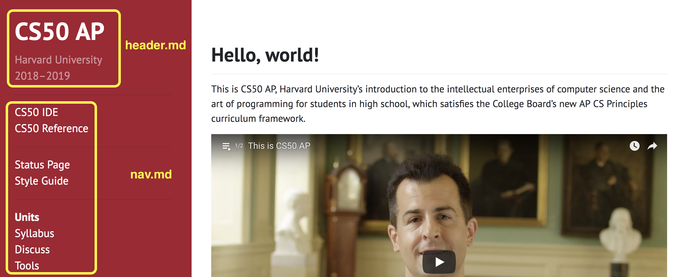
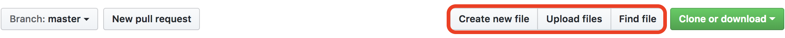
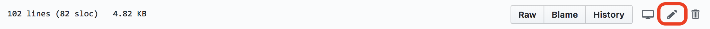
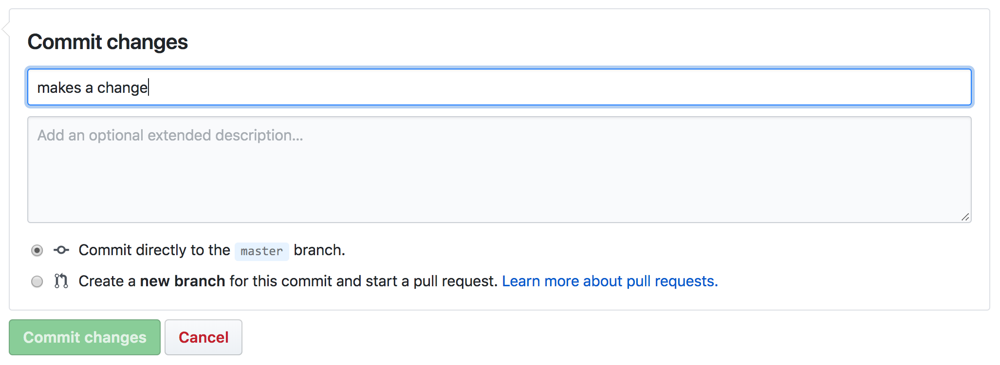

Teacher Sites#
This is where all the resources for your CS50 classroom will live for your classroom. With this model, you have complete control over what content is displayed as well as how it is displayed.
Getting Started#
Sign up or login to your GitHub account and visit https://github.com/cs50/ap
Click the
Forkbutton in the top right corner of the page. This will create your own copy of our teacher site, which will live athttps://github.com/USERNAME/ap, where USERNAME is your own GitHub username.Go to
https://github.com/USERNAME/ap/settings, where USERNAME is your own username. Scroll down to the GitHub Pages section. Under source, select “Master Branch” and click save. After you make a change (or a push), your course site should be live athttps://USERNAME.github.io/ap
Structure and Organization of Repository#
Most files you will be interacting with, particularly if you are less comfortable, are markdown (.md) files. Markdown is a lightweight markup language that allows to you to format text that will later be converted to HTML when your site is built.
_includes/#
Your _includes folder is where you will keep files that will be used on more than one page. For example, nav.md is included here because we want the navigation bar to appear on every page.
header.md: This is where you will set the title and subtitle for your own site.nav.md: This is where you will add menu items to your sidebar.

Note that * creates an item in the navigation bar on the left and *** creates a horizontal divide.
assets#
This folder contains static files, such as PDFs, images, etc.
pdfs/: This folder contains all the PDFs used in the CS50 AP curriculum. You do not need to edit any of these files. If interested, all of the reference sheets live here.css/: This folder is where you can add custom css to your site.
periods/#
If you have multiple CS50 classes running at different paces, this is where each individual period’s content goes. One method for displaying content is to include all of the units and just comment out what you do not want your students to view like in 1.md or 5.md. Be sure to link these in _includes/nav.md so that they appear in your nav bar. HTML comments, <!-- like this -->, work in .md just make sure you have a blank line between the end of your displayed text and the start of your comment. Otherwise Markdown will print out the plaintext <!-- … --> on your website.
curriculum/#
The curriculim directory contains a directory of each chapter. Within each chapter directory are a md files where are the resources are listed and a notes folder where the images and text for the notes pages live.
Gemfile and _config.yml#
These are files that you do not need to edit. Our teacher sites use a tool called Jekyll, which uses _config.yml to configure the site. Gemfile lists the Gems a Ruby project needs to run. For Jekyll specifically, they are used to for Jekyll plugins.
index.md#
This is the markdown file for the homepage of your site, https://USERNAME.github.io/ap. You can use this page for most anything including but limited to: course-wide announcements, Twitter feeds, embedded Google Calendars, links to school specific resources etc.
tools.md#
This page has a pdf of the workflow for how students typically use CS50 tools. This page also includes usage of CS50-specific command-line tools. If you have created your own tools or would like to share tools you have found to be helpful for your students you can feel free to post them here.
Content Updates#
You are more than welcome to change the files in this repository in whatever way you see fit. We’ll update our every year with the new resources but just be aware that while you can use older versions of the course, some websites and tools may be updated that are not necessarily reflected in older resources.
If you are among those less comfy and you will want to download your current version of your fork to your machine. You can do this by visiting https://github.com/USERNAME/ap, where USERNAME is your own GitHub username and clicking on the green clone or download and then select download ZIP. This will allow you to keep any changes you’ve made on your previous version of the site. Then visit https://github.com/USERNAME/ap/settings, where USERNAME is your own GitHub username, and scroll down to the bottom and select Delete this repository. Only do this after you are sure you’ve downloaded a copy of it locally, lest you lose any customizations you’ve made.
Then go ahead and visit github.com/cs50/ap and fork the repo per the instructions in the Getting Started Section.
If you are among those more comfy and you already have a fork of the repo you are certainly welcome to sync your fork with ours.
Custom Domains#
If you would like to serve your site from a different domain, you can visit https://github.com/USERNAME/ap/settings, where USERNAME is you own GitHub username. Scroll down to the GitHub Pages section and specify your custom domain, i.e ap.cs50.school. This will create a file in your ap repository called CNAME that specifies where this site will be served.
Editing Files#
Less Comfy#
If you are among those less comfy, you can do most everything from GitHub’s web UI. For the most part, you will be creating Markdown files, but keep in mind that you can use raw HTML directly into your .md files. For example if you wanted to include an iframe for a youtube video. You could literally type <iframe src="https://www.youtube.com/embed/…"></iframe> and it will create the iframe on your page.
To create a new file, simply click create new file and you can specify the file’s path and type the contents of that file directly into the text editor provided. You could also type the contents in some other text editor and upload the file directly with the upload files button.

You can also edit existing files. Once you’ve selected the file you’d like to edit, click on the pencil icon at the top right of the page. You’ll be able to make changes in the text editor provided.

Once you’re satisfied with your changes, you’ll want to commit them. Commit is GitHub lingo for saving a file. The top text box is the message for your commit. It could be something like “adds link to period4.md.” These messages are solely for you so don’t worry about being super descriptive. If you’d like to add further text here you can use the second box for a longer explanation but it is optional. Make sure that you have selected “Commit directly to the master branch.” Then click “Commit changes.”
Within a few minutes or so, your site should reflect these changes.

More Comfy#
If you’d like to develop your site and run it locally, before committing your changes, you’ll need to do a little setup first.
First you’ll need to check if you have ruby as with ruby -v in your terminal window. If you do not have ruby, you can find installation instructions here.
After you’ve successfully installed Ruby, you’ll need to install Jekyll, the static site generator we use for our teacher sites and Bundler, which provides a consistent environment for Ruby projects by tracking and installing the exact gems and versions that are needed. You can install both of these with gem install jekyll bundler. Once everything is installed and you’ve cloned your GitHub repo to your machine, you’ll be able to build and view your site locally.
First you’ll need to run
bundle install
This will install all the dependencies specified in your Gemfile. You will only need to do this once, unless you modify your Gemfile.
Then to build and serve up your site you’ll run
bundle exec jekyll serve
You can view your site at http://localhost:4000. Your page will reflect changes you’ve made to files in real time after saving the file and refreshing the page (it may take a minute or so). From there, you git add, git commit, and git push as normal.